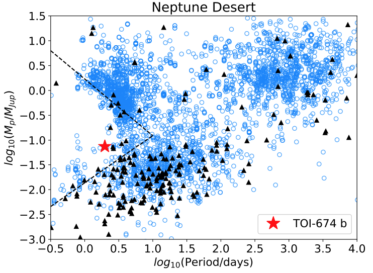

STATUS UPDATE: Orbit 2 of Sector 26 and orbit 1 of Sector 27 are now available to download as TICA products from MAST.
Welcome TESS followers! This week we are looking at three papers from the archive.
Discovery of 74 new bright ZZ Ceti stars in the first three years of TESS (Romero et. al., 2022) :
ZZ Ceti stars are cool pulsating white dwarfs, in this paper the authors report on the discovery of 74 such stars using TESS data. The variable stars were discovered in Sectors 1 through 39 of the TESS mission, utilizing both the 120-second and 20-second cadence.
The sample contains objects from both the northern and southern hemispheres, and consists of 13 low-mass and one very low-mass white dwarf candidates.
Eleven of the objects were followed up using ground-based telescopes, allowing for the detection of a larger number of periods. The spectra obtained were used for period and asteroseismological analysis, from which the authors estimated the stellar mass, effective temperature and hydrogen envelope mass of the sample.
A mean asteroseismological mass of ~ 0.635 M⊙ was derived upon exclusion of the extream candidates, and is within agreement of the mean mass estimated from both Gaia data (0.631 M⊙), and the previously known ZZ Cetis mass (0.644 M⊙).
The inclusion of the authors sample has increased the number of know ZZ Cetis by 20%.
The TESS-Keck Survey. VIII. Confirmation of a Transiting Giant Planet on an Eccentric 261 day Orbit with the Automated Planet Finder Telescope (Dalba et. al., 2022) :
Citizen scientists have discovered a giant 2.8 MJ planet, now known as TOI-2180 b, orbiting a slightly evolved G5 host star in Cycle 2 of the TESS mission.
The transit observed lasted 24 hrs and upon further followup (via the Automated Planet Finder telescope at the Lick Observatory) radial velocity measurements indicated an orbital period of 260.8 days with an orbital eccentricity of 0.368. These follow-up observations also indicated long-term acceleration from a more distant massive companion. A campaign was then launched in which 14 ground-based observatories were used to search for another transit, but no transit was confirmed.
The authors then used giant planet structure models to retrieve the bulk heavy-element content of the detected planet. For more information about this fascinating system and the work conducted please see the paper.
A Mirage or an Oasis? Water Vapor in the Atmosphere of the Warm Neptune TOI-674 b (Brande et al., 2022) :
TOI-674 b was discovered by the Hubble Space Telescope (HST) and is a super-Neptune with a radii of 5.25 R⊕ and a mass of 23.6 M⊕. The planet is located deep in the Neptune desert, a region in which Neptune sized planets have short orbital periods, and likely complex evolutionary histories.
Using G141 grism on the HST the authors obtain near-infrared transmission spectroscopy of the planets atmosphere in order to identify which absorbers are present. The data indicates increased absorption at 1.4 μm due to water vapor at 2.1σ, and as such this planet is now one of few with featured transmission spectra.
TESS data are used in combination of that from Spitzer/IRAC to re-derived the transit parameters with measurements of Rp/R∗=0.1135, T0=2458544.523792 BJD, and P=1.977198 days obtained.
Fig. 1: Taken from Romero et. al., (2022). Distribution of ZZ Ceti stars on the Teff − log g plane. The coloured symbols correspond to known ZZ Ceti stars, taken from Bognar & Sodor (2016) (blue up-triangle), Hermes et al. (2017a) (red circle), Su et al. (2017) (green square), Romero et al. (2019b) (orange circle) and Vincent et al. (2020) (magenta down-triangle). The objects observed in this work are depicted with black circles. We include evolutionary tracks (dashed lines) with stellar masses between 0.435 M⊙ and 0.9 M⊙ from Romero et al. (2019a) and 0.321 M⊙ from Istrate et al. (2014).
Fig. 2: Taken from Dalba et. al., (2022). The single-transit of TOI-2180 b observed by TESS with short cadence. Top: unflattened PDCSAP flux and the trend from the Savitsky–Golay filter. Bot- tom: flattened light curve. The red points are individual exposures (gray points) binned by a factor of 40. The blue line shows the best fit transit model.

Fig. 3: Taken from Brande et. al., (2022). Planet mass vs period for all planets with known masses and periods. The dashed black lines show the boundaries of the Neptune desert from (Mazeh et al. 2016), the black triangles show M-star planets, the blue circles show all stellar hosts, and the red star shows TOI-674 b